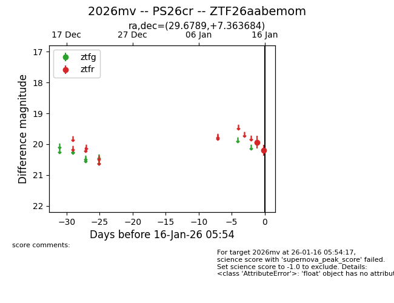
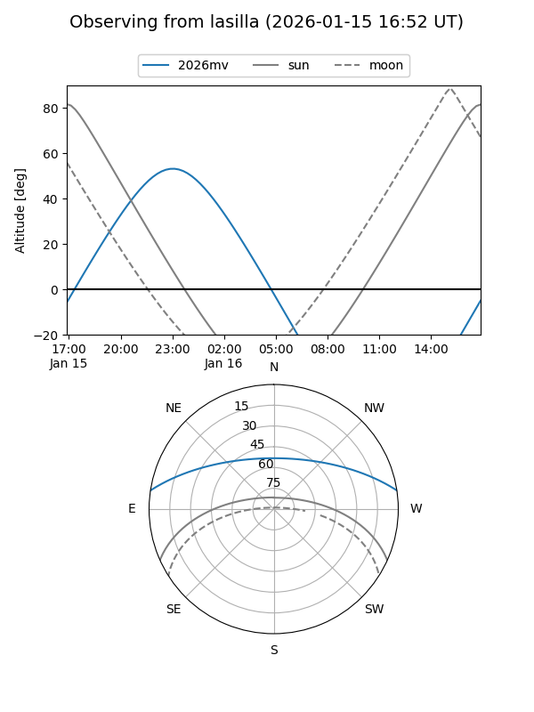
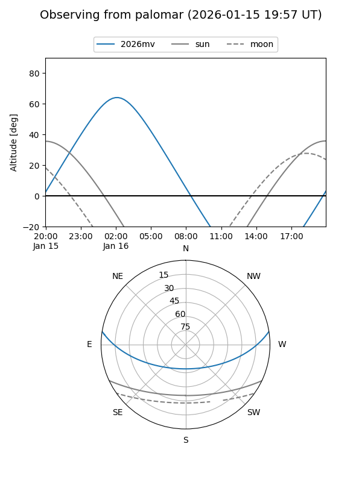

2026mv
Target 2026mv at 2026-01-16 05:55
Aliases and brokers:
FINK: link
Lasair: link
ALeRCE: link
TNS: link
YSE: link
alt names
ZTF26aabemom (ztf,fink_ztf)
2026mv (tns,yse)
PS26cr (panstarrs)
Coordinates:
equatorial (ra, dec) = 29.6789,+7.36368
equatorial (HMS+DMS) = 01:58:42.95,+07:21:49.26
galactic (l, b) = (150.6170,-51.85473)
Flags:
Photometry:
last ztfr=20.19
2 ztfr detections
Lightcurve

Visibility


Additional plots